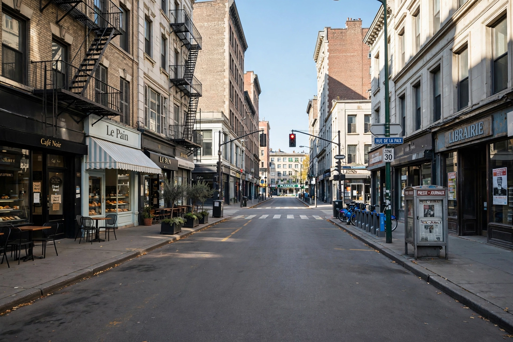

| Lockdown | |
|---|---|
 | |
| Type | Emergency protocol / public health measure |
| Settings | Prisons, schools, hospitals, cities, whole countries |
| Notable use | COVID-19 pandemic, 2020–2022 |
A lockdown is a restriction policy or emergency protocol that prevents people or information from leaving an area, or confines people within it. The term originated in the prison system, where a lockdown confines inmates to their cells, and was extended to security lockdowns in schools and hospitals during emergencies such as an active attacker. It acquired its best-known meaning during the COVID-19 pandemic, when governments worldwide imposed stay-at-home orders restricting movement, closing schools and businesses, and banning gatherings in an attempt to slow transmission of the virus.
The first large-scale pandemic lockdown was imposed in Wuhan, China, on 23 January 2020 and extended across Hubei province, affecting tens of millions. Through March 2020 most countries in Europe, the Americas, and elsewhere followed with national or regional stay-at-home orders; at the peak in early April 2020, more than half of humanity was under some form of lockdown. Measures typically exempted essential work, food shopping, medical care, and limited exercise, and were enforced by police with fines in many jurisdictions.
Lockdowns demonstrably reduced mobility and transmission but carried heavy costs: sharp economic contractions, disrupted education, deferred healthcare, and effects on mental health. Their proportionality and duration became subjects of sustained public and scientific debate, and pandemic preparedness plans written after 2020 continue to weigh them against less restrictive measures such as targeted closures and ventilation.
In security usage, lockdown drills in schools rehearse sheltering behind locked doors during a threat. In computing, "lockdown mode" denotes restricted device configurations that trade functionality for protection against targeted attacks.